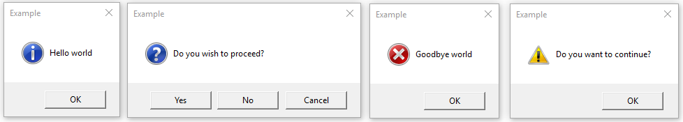

tkinter.messagebox — Tkinter message prompts
tkinter.messagebox
Source code: :source:`Lib/tkinter/messagebox.py`
The tkinter.messagebox module provides a template base class as well as
a variety of convenience methods for commonly used configurations. The message
boxes are modal and will return a subset of (True, False, None,
OK, CANCEL, YES, NO) based on
the user's selection. Common message box styles and layouts include but are not
limited to:

- class
Message(master=None, **options) Create a message window with an application-specified message, an icon and a set of buttons. Each of the buttons in the message window is identified by a unique symbolic name (see the type options).
The following options are supported:
- command
Specifies the function to invoke when the user closes the dialog. The name of the button clicked by the user to close the dialog is passed as argument. This is only available on macOS.
- default
Gives the symbolic name of the default button for this message window (
OK,CANCEL, and so on). If this option is not specified, the first button in the dialog will be made the default.- detail
Specifies an auxiliary message to the main message given by the message option. The message detail will be presented beneath the main message and, where supported by the OS, in a less emphasized font than the main message.
- icon
Specifies an icon to display. If this option is not specified, then the
INFOicon will be displayed.- message
Specifies the message to display in this message box. The default value is an empty string.
- parent
Makes the specified window the logical parent of the message box. The message box is displayed on top of its parent window.
- title
Specifies a string to display as the title of the message box. This option is ignored on macOS, where platform guidelines forbid the use of a title on this kind of dialog.
- type
Arranges for a predefined set of buttons to be displayed.
show(**options)Display a message window and wait for the user to select one of the buttons. Then return the symbolic name of the selected button. Keyword arguments can override options specified in the constructor.
Information message box
showinfo(title=None, message=None, **options)Creates and displays an information message box with the specified title and message.
Warning message boxes
showwarning(title=None, message=None, **options)Creates and displays a warning message box with the specified title and message.
showerror(title=None, message=None, **options)Creates and displays an error message box with the specified title and message.
Question message boxes
askquestion(title=None, message=None, *, type=YESNO, **options)Ask a question. By default shows buttons
YESandNO. Returns the symbolic name of the selected button.
askokcancel(title=None, message=None, **options)Ask if operation should proceed. Shows buttons
OKandCANCEL. ReturnsTrueif the answer is ok andFalseotherwise.
askretrycancel(title=None, message=None, **options)Ask if operation should be retried. Shows buttons
RETRYandCANCEL. ReturnTrueif the answer is yes andFalseotherwise.
askyesno(title=None, message=None, **options)Ask a question. Shows buttons
YESandNO. ReturnsTrueif the answer is yes andFalseotherwise.
askyesnocancel(title=None, message=None, **options)Ask a question. Shows buttons
YES,NOandCANCEL. ReturnTrueif the answer is yes,Noneif cancelled, andFalseotherwise.
Symbolic names of buttons:
ABORTValue: 'abort'
RETRYValue: 'retry'
IGNOREValue: 'ignore'
OKValue: 'ok'
CANCELValue: 'cancel'
YESValue: 'yes'
NOValue: 'no'
Predefined sets of buttons:
ABORTRETRYIGNOREValue: 'abortretryignore'
Displays three buttons whose symbolic names are
ABORT,RETRYandIGNORE.
OKValue: 'ok'
:noindex:
Displays one button whose symbolic name is
OK.
Icon images:
ERRORValue: 'error'
INFOValue: 'info'
QUESTIONValue: 'question'
WARNINGValue: 'warning'